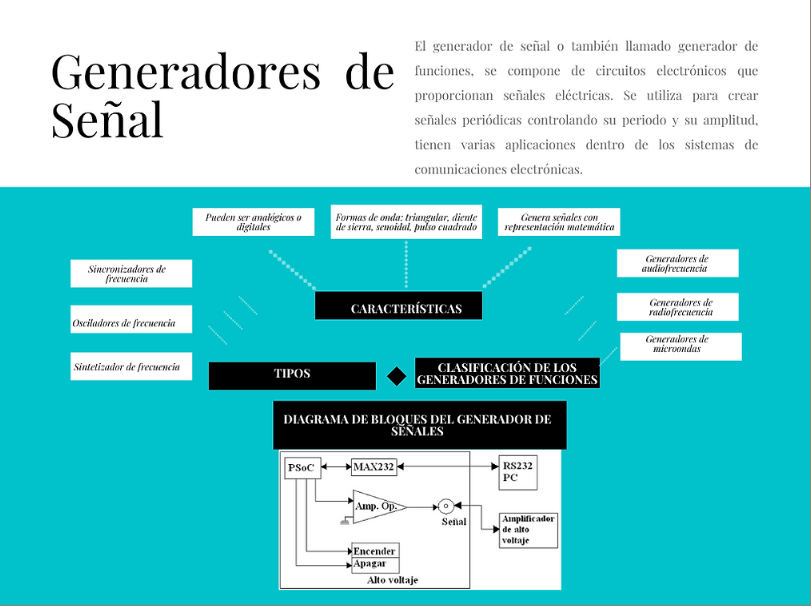
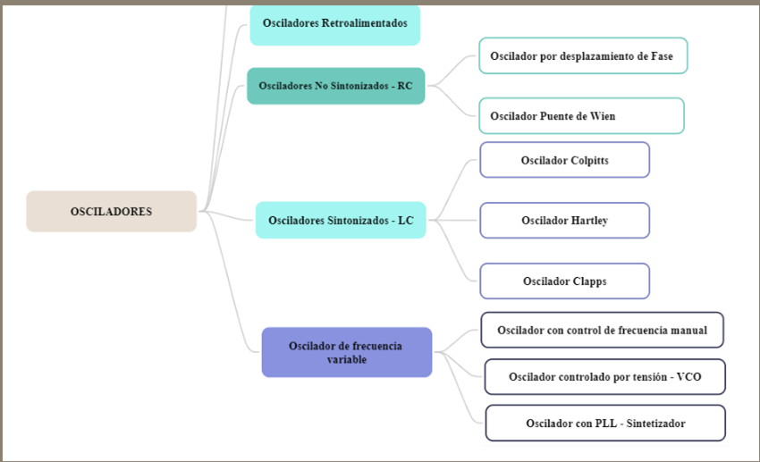
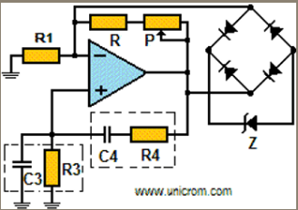
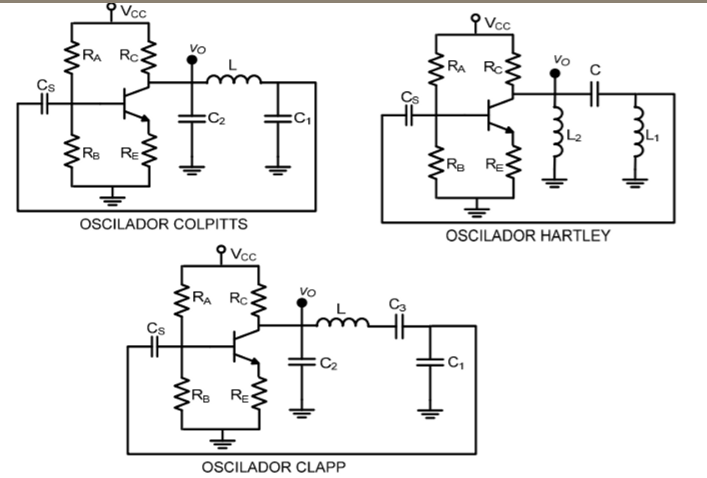
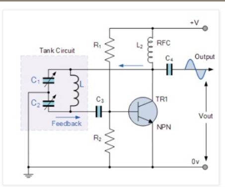
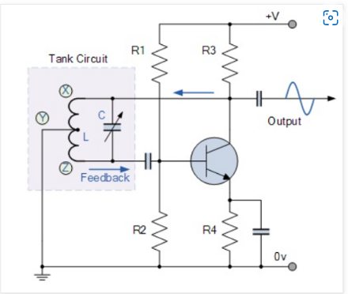
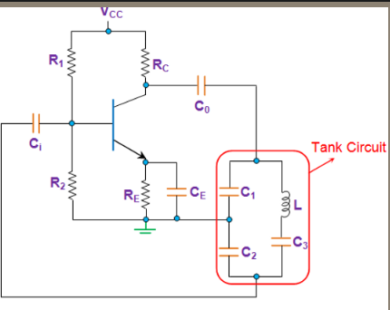

Comunicación Analógica
Página Web
Objetivo: Estudiar la clasificación y las características de los generadores de señales
Introducción
En el estudio de la comunicación analógica, los generadores de señales son dispositivos electrónicos que inducen la repetición y la no repetición de señales analógicas o digitales. El generador de señales se utiliza ampliamente en la resolución de problemas, el rastreo de señales, las pruebas, el ajuste de la respuesta del amplificador y la alineación del radio y el circuito de TV. El generador de señal tiene una propiedad de modulación incorporada. La amplitud y la propiedad de modulación son muy comunes en los generadores de señales

Osciladores
Los osciladores son generadores que suministran ondas sinusoidales y existen multitud de ellos. Generalmente, un circuito oscilador está compuesto por: un "circuito oscilante", "un amplificador" y una "red de realimentación". El circuito oscilante suele estar compuesto por una bobina (o inductancia) y por un condensador. El funcionamiento de los osciladores suele ser muy similar en todos ellos: el circuito oscilante produce una oscilación, el amplificador la aumenta y la red de realimentación toma una parte de la energía del circuito oscilante y la introduce de nuevo en la entrada produciendo una realimentación positiva. (Myelectronic, 2017)


• Osciladores Retroalimentados
Un oscilador realimentado es un circuito que usa un amplificador para suministrar la energía necesaria al oscilador y un circuito de realimentación para mantener la oscilación. Es en este circuito de realimentación donde se pierde la energía que tiene que suministrar el amplificador para el continuo funcionamiento del oscilador. El voltaje de arranque es generado por los mismos componentes del oscilador. (Unicrom, 2016)
Un oscilador realimentado es un circuito que usa un amplificador para suministrar la energía necesaria al oscilador y un circuito de realimentación para mantener la oscilación. Es en este circuito de realimentación donde se pierde la energía que tiene que suministrar el amplificador para el continuo funcionamiento del oscilador. El voltaje de arranque es generado por los mismos componentes del oscilador. (Unicrom, 2016)
• Osciladores No Sintonizados
Oscilador de Puente de Wien: Originalmente desarrollado por el físico alemán Max Wien en 1891, para la medición de impedancias. Es un oscilador RC no sintonizado de corrimiento de fase, que usa retroalimentación tanto positiva como negativa. Es un circuito relativamente estable, de baja frecuencia, que se sintoniza con facilidad, y se suele usar en generadores de señal para producir frecuencias de 5Hz a 1MHz. Genera ondas sinusoidales, mediante un amplificador realimentado por un puente compuesto de cuatro resistencias y dos condensadores. (Chango, 2013)
Oscilador de Puente de Wien: Originalmente desarrollado por el físico alemán Max Wien en 1891, para la medición de impedancias. Es un oscilador RC no sintonizado de corrimiento de fase, que usa retroalimentación tanto positiva como negativa. Es un circuito relativamente estable, de baja frecuencia, que se sintoniza con facilidad, y se suele usar en generadores de señal para producir frecuencias de 5Hz a 1MHz. Genera ondas sinusoidales, mediante un amplificador realimentado por un puente compuesto de cuatro resistencias y dos condensadores. (Chango, 2013)


• Osciladores Sintonizados
Es un circuito que produce una oscilación propia de frecuencia, forma de onda y amplitud determinadas. Los osciladores LC, son circuitos que usan circuitos tanques para establecer las frecuencias. Este oscilador presenta una gran estabilidad en frecuencia, comparado con un oscilador RC, pero con respecto a un oscilador controlado por cristal, es poco estable, por lo que se dice que su estabilidad es relativa. (Rodríguez, 2014)
Es un circuito que produce una oscilación propia de frecuencia, forma de onda y amplitud determinadas. Los osciladores LC, son circuitos que usan circuitos tanques para establecer las frecuencias. Este oscilador presenta una gran estabilidad en frecuencia, comparado con un oscilador RC, pero con respecto a un oscilador controlado por cristal, es poco estable, por lo que se dice que su estabilidad es relativa. (Rodríguez, 2014)
Oscilador de Colpitts:
El diseño del oscilador Colpitts utiliza dos condensadores de derivación central en serie con un inductor paralelo para formar su circuito de tanque de resonancia que produce oscilaciones sinusoidales. La ventaja de este tipo de configuración de circuito capacitivo es que, con menos inductancia propia y mutua dentro del circuito del tanque, se mejora la estabilidad de frecuencia del oscilador junto con un diseño más simple.
El diseño del oscilador Colpitts utiliza dos condensadores de derivación central en serie con un inductor paralelo para formar su circuito de tanque de resonancia que produce oscilaciones sinusoidales. La ventaja de este tipo de configuración de circuito capacitivo es que, con menos inductancia propia y mutua dentro del circuito del tanque, se mejora la estabilidad de frecuencia del oscilador junto con un diseño más simple.


Oscilador de Hartley:
El diseño del Oscilador Hartley utiliza dos bobinas inductivas en serie con un condensador paralelo para formar su circuito de tanque de resonancia produciendo oscilaciones sinusoidales. El circuito LC sintonizado está conectado entre el colector y la base de un amplificador de transistores. En lo que respecta al voltaje oscilatorio, el emisor está conectado a un punto de derivación en la bobina del circuito sintonizado. La parte de retroalimentación del circuito del tanque LC sintonizado se toma de la toma central de la bobina del inductor o incluso de dos bobinas separadas en serie que están en paralelo con un condensador variable. (Fernández, 2016)
El diseño del Oscilador Hartley utiliza dos bobinas inductivas en serie con un condensador paralelo para formar su circuito de tanque de resonancia produciendo oscilaciones sinusoidales. El circuito LC sintonizado está conectado entre el colector y la base de un amplificador de transistores. En lo que respecta al voltaje oscilatorio, el emisor está conectado a un punto de derivación en la bobina del circuito sintonizado. La parte de retroalimentación del circuito del tanque LC sintonizado se toma de la toma central de la bobina del inductor o incluso de dos bobinas separadas en serie que están en paralelo con un condensador variable. (Fernández, 2016)
Oscilador Clapp:
El oscilador Clapp es una versión mejorada del Colpitts. Se caracteriza por utilizar un circuito LC en el que aparecen dos condensadores en una rama y una bobina en serie con un condensador variable en otra. El oscilador Clapp, al igual que el Colpitts, se puede realizar con un amplificador inversor o con amplificador no inversor.
El oscilador Clapp es una versión mejorada del Colpitts. Se caracteriza por utilizar un circuito LC en el que aparecen dos condensadores en una rama y una bobina en serie con un condensador variable en otra. El oscilador Clapp, al igual que el Colpitts, se puede realizar con un amplificador inversor o con amplificador no inversor.

Descarga el documento
Materia capítulo II
Bibliografía
[1] Universidad Nacional Autónoma de México, Diseño de osciladores a 10GHz, Facultad de Ingeniería, Ciudad Universitaria, México D.F., 2013. [En línea]. Disponible
en: http://www.ptolomeo.unam.mx:8080/jspui/bitstream/132.24852.100/4886/1/TESIS.pdf
[2] R. T. M. Ricardez, Diseño y realización de osciladores en la banda X (7-8 GHz) con técnicas de lazo de fase, Instituto Nacional de Astrofísica, Óptica y Electrónica (INAOE), México. [En línea]. Disponible en: https://inaoe.repositorioinstitucional.mx/jspui/bitstream/1009/2ws028/1/RicardezTMR.pdf
[3] ITESO, Osciladores y Generadores de Señal, Departamento de Electrónica, Universidad Jesuita de Guadalajara. [En línea]. Disponible en: https://desi.iteso.mx/erayas/documents/electronics_2_course/oscillators_1.pdf
[2] R. T. M. Ricardez, Diseño y realización de osciladores en la banda X (7-8 GHz) con técnicas de lazo de fase, Instituto Nacional de Astrofísica, Óptica y Electrónica (INAOE), México. [En línea]. Disponible en: https://inaoe.repositorioinstitucional.mx/jspui/bitstream/1009/2ws028/1/RicardezTMR.pdf
[3] ITESO, Osciladores y Generadores de Señal, Departamento de Electrónica, Universidad Jesuita de Guadalajara. [En línea]. Disponible en: https://desi.iteso.mx/erayas/documents/electronics_2_course/oscillators_1.pdf
INFOTMACIÒN

Integrantes:
•Karina Yucailla
• Sebastian Fiallos
• Christian Guachanboza
• Gutemberg Ramos
• Bryan Salazar
• Sebastian Fiallos
• Christian Guachanboza
• Gutemberg Ramos
• Bryan Salazar
Docente:
• Ing. juan Pablo Pallo